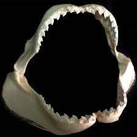

Funnily enough the largest sharks tend to be the most harmless, they eat plankton by swimming with their jaws wide open.Some sharks have eyes similar to a cat’s, with a mirror-like layer that allows them to see better in murky water.Zebra Sharks actually look more like leopards with black spots, but lose the spots as they mature.Sharks can feel vibrations in the water due to a line of canals that go from its head to its tail, these canals are filled with sensory cells growing hair, the hair moves when the water vibrates allowing them to quickly locate prey.Shark Fin soup is a popular and traditional delicacy in Asia, Hawaii and Australia but the practice of finning sharks is adding to the rapid decline of sharks and hurtful to the animals. Up to 73 million sharks are killed a year for their fins.
In Icelandic Rotten Shark or ‘Hakarl’ is a traditional dish served during the Midwinter Festival – but not particularly popular with visitors! Accounts vary, some say it tastes like cheese, others say it’s practically inedible.Shark skin is tough and hard and before the invention of sandpaper it was used to polish wood.They have a sensory organ called ‘ampullae of Lorenzini’ that allows them to feel electrical currents in the water.Sharks can smell a drop of blood in 1 million drops of water.Sharks never run out of teeth, if they lose one another spins forward from rows and rows of backup teeth – A shark may grow and lose 20, 000 teeth in its lifetime!A shark can hear a fish in the water more than a million miles away .Most of today’s sharks developed 64 million years ago – when the dinosaurs were around!

There are over 400 different species of sharks.Scientists can tell the age of a shark by counting the rings on its vertebrae (similar to how they can tell how old a tree is by counting its rings!).Until the 16th century they were known to seafarers are “sea dogs”.Baby sharks are called pups. Sharks may be colorblind.You are 1,000 times more likely to drown at sea than to be attacked by a shark.In Fiji and the Solomon Islands it is forbidden to eat sharks.Shark skeletons are made of cartilage and not bone, allowing for better flexibility.Shark teeth have been thought to inspire the first tools created by humans, and were often used as tools themselves.
Sharks are often studied to help human ailments, they are thought to hold the key to everything from fighting tumors (which they do not get) to helping prevent clotting and heart disease with their blood and have incredible immune systems.Sharks are closely related to stingrays.The most dangerous sharks are the Great White Shark, the Hammerhead Shark, the Tiger Shark, the Mako Shark and the Bull Shark.Sharks wounds heal quickly.Nurse Sharks are thought to be the laziest sharks, they refuse to move in cold months, have a limited diet and don’t need to move to breathe like other sharks.Unlike most animals sharks can move both their upper and lower jaw.
